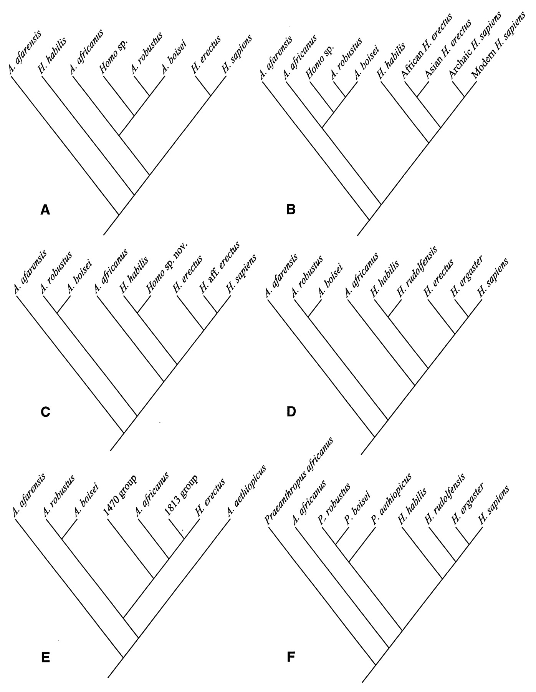

{kind=link}
{kind=link}

| email - May 2007 |
| by Do-While Jones |
From time to time we get requests from individuals to help them debate an evolutionist. We don't provide that service.
One-on-one personal debates are a waste of time. Anyone who is committed enough to debate is not likely to change his mind. Furthermore, the religious and political implications are likely to trump any scientific argument in these cases. They generally tend to turn nasty, and degenerate into personal attacks. We do, however, like to listen to what evolutionists have to say.
Michael, a creationist, sent us several pages of email from Scott, an evolutionist, covering a wide range of issues. Here is just a little excerpt of what Scott wrote to Michael,
|
The commonality of DNA could indeed be seen as a "template" that a designer used. As you know, many people from Paley on down to Dembski have argued something very similar. There are two problems I see with this arguement: [sic] 1) It doesn't explain non-functional similarities. When you look at the parts of DNA that don't code for proteins, why should non-coding chimp DNA be closer to mine than to my cats? It seems to me that either they should have all been the same 6000(ish) years ago, in which case they would all be equally far from each other now, or they would have been randomly distributed, in which case they should have no pattern at all today. Instead, all of the non-coding DNA has a pattern of relationships that not only match each other, but match the fossil record. I don't see why a designer would do this, since there is no functional reason to do so. 2) It also doesn't explain the pattern of functional parts we see in living animals. Let me show you a photo: http://skeletaldrawing.com/ext_photos/chimera.jpg It's a cute little Photoshop creation (I didn't do it) that obviously throws together parts of a rodent, a bat, and a ram. If animals were created, I would expect them to look more like this. For example, why should all birds have feathered wings while all bats have skin-wings? Surely there are cases where a skin-wing is better than a feathered wing (and vice versa), but why are there no birds with skin wings and no bats with feathers? If they were put together from scratch by a designer you would expect him to mix and match whichever pieces He needed, but instead animals seem to be stuck with whatever their relatives have, and then just modify those a little bit. |
Scott used the term, "non-coding" rather than "junk" to describe that portion of the DNA that we don't understand. There is now less "junk DNA" in the human genome today than there was a few years ago, but that isn't because the DNA changed. It is our understanding that has improved, and will continue to improve. Apparently the part of the DNA that doesn't tell how to code for proteins seems to control when the coding part is "expressed." Although we don't fully understand the junk DNA, it is clear that it isn't just random junk. Creatures that have similar observable characteristics will have more similar DNA because DNA creates the characteristics, whether we call it "junk" or not.
His statement that DNA matches the fossil record is questionable. If that were true, there would not be the notorious fights between paleontologists and microbiologists regarding the classification of animals that we have chronicled in the past. 1 Paleontologists insist that their family tree, based on fossils is correct, while microbiologists claim their family tree, based on DNA is correct. If DNA matched the fossils there would not be any argument.
It was the second of Scott's points that we found amusing. He asks, "Why are there no birds with skin wings and no bats with feathers?" As we pointed out in the April, 2007, newsletter, it is simply because scientists chose the definitions that way. Birds have feathers by definition. When those definitions aren't convenient, they change them. That's why dinosaurs are birds now, not reptiles.
|
Luckily, you picked a subject that I actually research and publish on, the origin of birds. First off, no one thinks that birds evolved from fish (directly). I would be happy to cover the origin of land vertebrates from sarcopterygians if you like, but that is not my specialty. Skipping waaaaaaay ahead in the story to the origin of birds from dinosaurs, we have literally thousands of fossils, including hundreds of feathered dinosaur fossils (no, not the composite fossil that National Geographic foolishly published in their magazine). As an anatomist, I try to reconstruct as many as time allows, but I am hopelessly behind. Here is a visual cladogram I managed to put together using only accurate skeletal reconstructions (I did about half of them). There are about 30 known species missing, but it gives you an idea of how good the fossil record is for the origin of birds: http://skeletaldrawing.com/dino_bird_cladogram.jpg. |
It is a beautiful picture, but it doesn't prove a thing. One can certainly organize birds by physical appearance, but that doesn't prove they evolved from a common ancestor.
Given a collection of 500 randomly selected items from a grocery store one could create a cladogram showing which items are most similar. If six people did it they would probably come up with six different cladograms, and they would argue about which one was correct. In fact, that's exactly what has happened as we reported in our Human Evolution essay seven years ago. 2 That essay included "Figure 1" from an article in the prestigious journal Science 3 showing six different "most parsimonious cladograms" of hominid relationships according to six different expert teams of human evolutionists.
 |
|---|
Why the disagreement? The short answer is that cladograms are subjective. They depend upon opinion as to which characteristics are most important. The most important characteristics are obviously the ones that prove what you want to prove. More than nine years ago 4 we used a cladogram to "prove" how the English word "evolution" came from "confusion" through small step-wise letter changes.
Cladograms are just a visual aid for expressing someone's opinion. Scott apparently used size and shape of bones in constructing his cladogram because he is an expert in bird anatomy. If he had used first appearance in the fossil record, or DNA (if it were available) as his criteria, he would have come up with a different cladogram, implying a different evolutionary sequence. They can't all be correct.
Scott believes all birds evolved from dinosaurs, and he believes dinosaurs and birds gradually changed shape, so he has drawn a picture that sorts birds and dinosaurs by shape, expressing his opinion of how they changed shape.
Much of his argument boils down to the notion that if God had created life, He would have done it differently. He can think whatever he wants about God. But since his arguments are based on what he thinks about God, they aren't really scientific. His arguments are religious.
Scott would have made animals more diverse if he had been God. It is hard for us to imagine how animals could be any more diverse than they actually are, so Scott must have better imagination than we have. But then, imagination is the hallmark of evolution. For reptiles to have evolved into mammals, one has to be able to imagine mutant turtles growing breasts. One has to imagine dinosaurs growing feathers and learning to fly. One has to imagine jellyfish growing backbones. Imagination isn't science.
| Quick links to | |
|---|---|
| Science Against Evolution Home Page |
Back issues of Disclosure (our newsletter) |
| Web Site of the Month |
Topical Index |
Footnotes:
1
Disclosure, July 1999, "The DNA Dilemma"
2
Disclosure, January 2000, "Human Evolution"
3
Wood & Collard, Science, Vol 284, 2 April 1999, "The Human Genus" page 67, https://www.science.org/doi/10.1126/science.284.5411.65
4
Disclosure, March 1998, "Dinobirds"